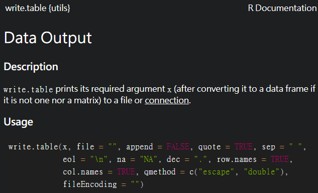

Chapter 5 應用篇_資料讀取、匯出、合併與瀏覽
5.1 設定工作路徑
首先可以先設定放檔案路徑，(需要注意的是在路徑上平常多是使用\，但在R中需要使用/)
設定好路徑之後，讀取或匯出資料就只需要寫檔案名稱，不用加上前面路徑，會直接存在設定路徑的資料夾中，若檔案需要放在另外位置，也只須在檔名前面加上需要存取的位置
可以對需要存放的資料夾按
右鍵->內容->位置或是右鍵->複製路徑
查看資料夾的路徑
若是使用R Project打開，除非需要更換路徑，不然預設就是R Project的資料夾
# 設定工作路徑
setwd("D:/Dropbox/R_for_NGO")
# 顯示目前的工作路徑
getwd()5.2 讀取資料
常見的Open Data儲存方式包括
- 表格式檔案（包含 CSV 資料(.csv)、Excel 試算表(.xlsx)、spss(.sav)、stata(.dta)、SAS(.sas7bdat)）
- 非表格式檔案（包含 TXT 資料、JSON 資料、XML資料）
但大多數的公開資料都可以直接下載CSV檔案，或是調查資料大多都有提供spss、stata或SAS的檔案格式，因此在此先介紹這個較簡單的方式，
另外其他透過網路爬蟲、API或JSON與XML格式的資料，暫不多做介紹，有興趣者可以到以下連結查看參考1、參考2、參考3
5.2.1 Import Dataset功能 (RStudio)
若是檔案為可直接下載(表格式檔案式)，包括文字檔、其他軟體的檔案格式，
在RStudio當中有提供直接點選讀取資料的功能，包括純文字.txt、.cvs、或Excel試算表.xslx、spss、SAS、Stata的檔案格式
下圖以讀取R_practice_new的.cvs檔案為範例，
1. 點選Import Dataset -> From Text(readr)...
點選Import Dataset -> From Text(readr)...
2.出現視窗後點選左上角Browse，點選要輸入的檔案
出現視窗後點選左上角Browse，點選要輸入的檔案
- 之後空白處會載入部分資料提供預覽，可以根據需求更改參數(左下角)

之後空白處會載入部分資料提供預覽，可以根據需求更改參數(左下角)
- 右下角也有提供程式碼，且就是根據你點選的方式呈現，可以點選完後複製程式碼(右下有個類似紙的圖案)，這樣就可以留下讀檔案的紀錄

右下角也有提供程式碼，且就是根據你點選的方式呈現，可以點選完後複製程式碼
複製的程式
# 讀取R_practice_new的.cvs檔案
library(readr)
R_practice_new <- read_csv("data/R_practice_new.csv")
View(R_practice_new)讀取檔案後會出現在Global Environment中
讀取檔案後會出現在Global Environment中
也可以點開瀏覽檔案
點開瀏覽檔案
另外若是要讀取R_practice_new的.dta檔案，可是可以用類似上述點選的方式讀取，
# 讀取R_practice_new的.dta檔案
library(haven)
R_practice_new <- read_dta("data/R_practice_new.dta")
View(R_practice_new)5.3 匯出資料
在R處理完檔案後，通常會將資料匯出成其他另外檔案提供其他人使用，較常匯出使用的檔案格式tab分隔的文字檔.txt或是逗號分隔的文字檔.csv，有一些格式上的呈現可以另外再進行參數設定，這邊只會介紹簡單的匯出形式，若要調整可參考該函數的help文件
5.3.1 R物件.rds
若是處理到一半，之後還要繼續用R處理，可以先匯出成R物件檔案.rds，較方便自己下次處理，後續最後處理完成再轉換成其他常見檔案
# 取得R內建資料
data(iris)
saveRDS(iris, "iris.rds") ## 前面是data名稱、後面是要存的檔案名稱5.3.2 文字檔.txt
# 查詢write.table的help文件
?write.table
# 取得R內建資料
data(iris)
# 匯出成.txt檔案
write.table(iris, file = "iris.txt", sep = ",", row.names = F, col.names = T)write.table的help文件，文件後面也有針對每個參數的描述 
5.4 簡單資料合併
在上用資料時，可能遇到有有新資料需要整合在舊資料當中，這時我們就可以使用一些簡單的資料合併方法來整合資料，
舉例來說:
若是今天有一份蒐集好的簡單資料，但收回來時發現忘記問受訪者的性別，因此又再去補問一次，此時我們手上就會有兩份資料，一個是原先收集的資料，另一個是後來蒐集的性別資料，而這兩份資料都是相同的受訪者回答，因此我們就可以透過受訪者的id編號將性別資料橫向合併到原先資料中，也就是原先資料可能有100筆(100個受訪者)且只有問年齡、教育程度，合併後的資料多了性別的變項但仍是100筆(100個受訪者)，變項變多，但資料筆數不變。
另外一種狀況同樣有一份蒐集好的資料，但隔一年又收集了一份問了相同問題的資料，但這兩份資料的受訪者不一樣，此時我們可以利用相同的問題，將兩份資料垂直的合併，也就是原先資料可能只有100筆(100個受訪者)且有問年齡、教育程度，合併之後變成200筆(200個受訪者且還是只有問年齡、教育程度，變項不變，但資料筆數資加了。
另外還有一些情況像是excel中的vlookup等也可以用合併的概念在R語言中使用。
5.4.1 rbind()和cbind()
在資料當中有時需要新增整列或整行的資料，
可以使用rbind()和cbind()來完成(vector或是data.frame都適用)
若今天想在iris資料中加入新的一列(原先有150筆資料新增一筆)
# vector
rbind(c(1, 2, 3), ## 第一列
c("apple", "banana", "cat") ## 第二列
)
# 取得R內建資料
data(iris)
names(iris)
# 新增成另一個資料
iris_nrow <- rbind(iris, ## 資料框
c(1, 2, 3, 4, "setosa") ## 新增一列
)
## or
# 直接更換原先的資料
iris <- rbind(iris, #資料框
c(1, 2, 3, 4, "setosa") ## 新增一列
) 

若今天想在iris資料中加入新的一行(原先有四行)
# vector
cbind(c(1, 2, 3), ## 第一行
c("apple", "banana", "cat") ## 第二行
)
# 取得R內建資料
data(iris)
names(iris)
# 新增成另一個資料
iris_newcol <- cbind(iris, ## 資料框
rep("newcol", nrow(iris)) ## 自行新增一行、或是有對應的資料可以直接新增
)
5.5 資料瀏覽
若已經將資料讀取到R裡面，一開始需要看一下或檢查資料的大致狀況如何
以R_practice_new.csv資料為例:
5.5.1 資料屬性查詢函數
讀取R_practice_new的.cvs檔案(或用點選方式)
library(readr)
R_practice_new <- read_csv("data/R_practice_new.csv")查看資料內容
View(R_practice_new) ## 查看資料
head(R_practice_new) ## 查看前6筆資料內容
tail(R_practice_new) ## 查看後6筆資料內容查看資料各種名稱
names(R_practice_new) ## 顯示資料名稱
colnames(R_practice_new) ## 顯示欄位名稱
rownames(R_practice_new) ## 顯示列名稱(若沒有則顯示編號)
dimnames(R_practice_new) ## 先顯示列再顯示欄位的名稱查看資料長度
length(R_practice_new) ## 顯示資料查度(若為data.frame會顯示欄位數)
dim(R_practice_new) ## 先顯示列再顯示欄位的長度顯示資料的架構資訊
str(R_practice_new)
class(R_practice_new$age) ## 數值資料
class(R_practice_new$area) ## 文字資料簡單查看資料分配
table(R_practice_new$sex) ## sex(性別)次數分配
table(R_practice_new$area) ## area(地區)次數分配上述函數也可以合併使用
## 顯示前6筆資料的area(地區)次數分配
table(head(R_practice_new)$area)5.5.2 資料排序
另外也可以對向量或資料進行排序
創建一個由數值組成的nosort向量
nosort <- c(1, 6, 5, 8, 2, 3)使用sort()函數，預設是由小排到大
sort(nosort) ## 預設是由小排到大## [1] 1 2 3 5 6 8使用sort()函數，將decreasing設為T(TRUE)，代表由大排到小
sort(nosort, decreasing = T) ## 由大排到小## [1] 8 6 5 3 2 1使用R_practice_new資料為範例:
讀取R_practice_new的.cvs檔案(或用點選方式)
library(readr)
R_practice_new <- read_csv("data/R_practice_new.csv")
View(R_practice_new)顯示age(年齡)前6筆資料
head(R_practice_new$age)## [1] 18 22 22 22 24 24顯示age(年齡)排序之後的前6筆資料
sort(head(R_practice_new$age)) ## [1] 18 22 22 22 24 24顯示age(年齡)排序排序之後前6筆資料的原始位置(由小到大)
order(head(R_practice_new$age))## [1] 1 2 3 4 5 6根據age(年齡)排序之後的前6筆資料的原始位置，來排序整個資料
R_practice_new[order(head(R_practice_new$age)), ]## # A tibble: 6 × 8
## id sex age height weight area score fitness
## <dbl> <dbl> <dbl> <dbl> <dbl> <chr> <dbl> <dbl>
## 1 75 1 18 167 49 中區 97 0
## 2 55 1 22 161 55 南區 97 0
## 3 50 1 22 167 66 南區 99 1
## 4 104 1 22 166 66 南區 99 1
## 5 37 1 24 168 61 中區 96 0
## 6 16 2 24 172 52 中區 91 05.5.3 用dplyr瀏覽
dplyr套件有許多函數可以更方便的瀏覽或操作data.frame資料，在此先介紹部分關於瀏覽相關功能，之後章節會進一步介紹處理資料功能，
dplyr cheat sheet、參考1、參考2、參考3、參考4
select(): 可以選擇要分析的欄位(Column)filter(): 可以選擇要分析的觀察值(Row)arrange(): 用來排序觀察值group_by(): 用來分組瀏覽
讀取R_practice_new的.cvs檔案(或用點選方式)
library(readr)
R_practice_new <- read_csv("data/R_practice_new.csv")
View(R_practice_new)載入套件
library(tidyverse) ## 整合性的資料分析(包括dplyr)
## OR
library(dplyr) ## 也可以直接載入dplyr若只想要查看欄位 id、age(年齡),用select() 進行選擇
R_practice_new %>%
select(id, age)若只想要查看age(年齡)大於等於50的資料，用filter()進行篩選
R_practice_new %>%
filter(age >= 50)若想根據sex(性別)和age(年齡)排序(先排序sex再排age)來查看資料，用arrange()進行排序
R_practice_new %>%
arrange(sex, age)若想根據sex(性別)進行分組來看男女性不同的age(年齡)平均，用group_by()進行分組統計，通常是與summarise()結合使用，來查看描述統計
R_practice_new %>%
group_by(sex) %>%
summarise(age_mean = mean(age))5.5.4 其他
5.5.4.1 data.table
data.table是data.frame資料格式的延伸，在處理或讀取資料上比data.frame還來的有效率，這部分進階的可以參考1